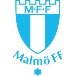

AI置信度:低
埃夫斯堡 vs 马尔默
埃夫斯堡
VS
(0-0)

马尔默2026-10-24 01:00
赛前情报速览
| 项目 | 内容 | 项目 | 内容 |
|---|---|---|---|
| 赛事 | 瑞超 | 编号 | 周五003 |
| 比赛日 | 2026-10-23 | 开球时间 | 2026-10-24 01:00 |
| AI 置信度 | 低 | 冷启动 | 否 |
| 结论模型 | 量化推演引擎 | 数据样本 | 主 16 场 / 客 20 场 |
| 半场概率 | 主 36.7% / 平 37.8% / 客 25.5% | 半全场首选 | 主/主 29.3% |
核心数据对比
| 数据维度 | 埃夫斯堡 | 马尔默 |
|---|---|---|
| 期望进球（模型） | 1.778 | 1.361 |
| 统计样本（场） | 16 | 20 |
历史交锋
两队在本站收录期内暂无交手记录，数据积累后自动展示。
近期战绩
埃夫斯堡 近期
平
| 日期 | 赛事 | 对手 | 比分 | 半全场 | 结果 |
|---|---|---|---|---|---|
| 2026-10-18 | 瑞超 | 客 天狼星 | 2-2 | 客/平 | 平 |
马尔默 近期
胜负平
| 日期 | 赛事 | 对手 | 比分 | 半全场 | 结果 |
|---|---|---|---|---|---|
| 2026-10-12 | 瑞超 | 主 卡尔马 | 1-0 | 平/主 | 胜 |
| 2026-09-19 | 瑞超 | 客 韦斯特罗 | 2-0 | 主/主 | 负 |
| 2026-09-07 | 瑞超 | 主 索尔纳 | 0-0 | 平/平 | 平 |
埃夫斯堡 近期
平胜平胜胜胜负负负平平平平胜胜胜
近 16 场 进 24 失 16（场均 1.5 / 1.0）
埃夫斯堡 近期主场
平胜胜负平平
近 6 场 进 7 失 6（场均 1.2 / 1.0）
马尔默 近期
胜负平胜负胜胜负平胜胜胜负负胜负胜胜平负
近 20 场 进 30 失 24（场均 1.5 / 1.2）
马尔默 近期客场
负负负胜胜负负负胜负
近 10 场 进 19 失 20（场均 1.9 / 2.0）
伤停与缺阵
| 球队 | 球员 | 原因 | 状态 |
|---|---|---|---|
| 埃夫斯堡 | 列治拿 | 腹股沟 | 存疑 |
| 埃夫斯堡 | 马古斯洛顿 | 不详 | 存疑 |
| 马尔默 | 邦图斯赞臣 | 十字靭带 | 缺阵 |
| 马尔默 | 奥斯卡施奥斯坦 | — | 缺阵 |
| 马尔默 | 华伦甘文斯 | 不详 | 缺阵 |
| 马尔默 | 布苏拿锡 | 膝伤 | 存疑 |
| 马尔默 | 诺亚约翰 | 不详 | 存疑 |
| 马尔默 | 美斯高拿度 | — | 存疑 |
赛前军情
埃夫斯堡前锋柏费克数周前手腕骨折后已无大碍，今仗可重新候命，但需佩戴保护套上阵。他在上周对天狼星一役已曾于补时阶段后备入替。马尔默前锋迪亚高加西亚已摆脱伤病困扰，上周对赫根时后备上阵踢了35分钟，今场将可继续披甲。
埃夫斯堡停赛：无
上阵成疑：列治拿（腹股沟）、马古斯洛顿（不详）
受伤／缺阵：无
马尔默停赛：无
成疑：布苏拿锡（膝伤）、诺亚约翰（不详）
天气
| 项目 | 内容 | 项目 | 内容 |
|---|---|---|---|
| 城市 | 布罗斯 | 时段 | 当地 18:00–23:00 |
| 气温 | 8.2~9.7℃ | 降雨概率 | 16% |
| 降水量 | 0.0mm | 风速 | 14.4km/h |
| 评估 | ✅ 适宜 |
市场数据
埃夫斯堡 胜
1.85
平
3.55
马尔默 胜
3.25
| 市场 | 埃夫斯堡 | 平 | 马尔默 |
|---|---|---|---|
| 胜平负 | 1.85 | 3.55 | 3.25 |
| 去水概率 | 47.8% | 24.9% | 27.2% |
让球
让球
主让 1
结论
让球负
模型视角
模型预期总进球合计：3.139 球
冷门评估：高（冷门概率 58.1%）
综合赛果推演
方向
主胜
47.7%
次选 平 27.0%
比分
1-1
13.0%
次选 2-1 8.9%
进球
2 球
20.9%
次选 3 球 14.8%
半全场
主/主
29.3%
次选 客/客 17.1%
战力对照
六维战力
埃夫斯堡（实线）马尔默（实线）
进球威胁度走势
埃夫斯堡（实线）马尔默（虚线）
留档核验
结论指纹
生成于 2026-10-23T16:04:01+08:00
结论指纹
8d6448dc65b4 （仅覆盖赛前结论，赛后回填不改变该值）生成于 2026-10-23T16:04:01+08:00